Ghidul paginii – machiaj lifting
Machiaj lifting pas cu pas
Tehnici de efect lifting și revitalizare a feței
Top produse pentru machiaj lifting
Texturi ușoare și efect de ten proaspăt
Produse premium pentru machiaj lifting
Efect de piele „scumpă” și aspect impecabil
Set buget pentru machiaj lifting (până la 500 MDL)
Kit minim pentru un look fresh și ridicat optic
Programează-te la un make-up artist
Programează-te pentru machiaj lifting în Moldova și obține un look proaspăt, natural și armonios, care îți evidențiază trăsăturile.
Ce este machiajul lifting
Machiajul lifting este o tehnică ce are ca scop crearea unui efect vizual de ten întins, proaspăt și întinerit, care corectează trăsăturile feței fără a încărca pielea.
Această tehnică se bazează pe jocul de lumini, forme și texturi. Machiajul lifting ajută la ridicarea optică a feței, deschiderea privirii și obținerea unui aspect mai neted și îngrijit.
Obiectivul principal este efectul de prospețime și lifting natural: uniformizarea tenului, corectarea zonelor „căzute” optic și evidențierea trăsăturilor fără efect de mască.
Machiajul lifting este ideal pentru ten matur, look de zi, evenimente și ședințe foto — oferă un aspect mai tânăr, odihnit și echilibrat.
De ce machiajul lifting oferă un aspect mai proaspăt și ferm
- ridică optic trăsăturile feței și creează efect de lifting ușor
- deschide privirea și oferă un aspect odihnit
- uniformizează tenul și reduce vizibilitatea ridurilor fine
- adaugă prospețime și un glow natural pielii
- creează un look îngrijit și „luxos” fără încărcare excesivă
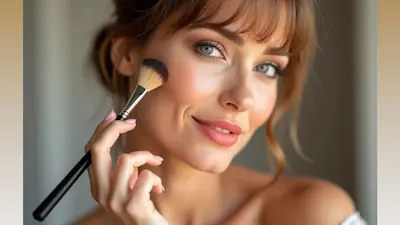
Pregătirea pielii pentru machiajul lifting
Machiajul lifting începe întotdeauna cu o pregătire corectă a pielii. Chiar și cele mai bune produse nu vor oferi efectul de ten neted, ferm și luminos dacă pielea este deshidratată sau neuniformă.
O piele bine pregătită ajută machiajul să se așeze uniform, oferă un aspect mai natural și amplifică efectul de întinerire vizuală fără încărcare.
- Curățare — un cleanser blând pentru piele curată și proaspătă
- Hidratare — cremă sau ser pentru elasticitate și fermitate
- SPF (ziua) — protecție împotriva îmbătrânirii premature
- Primer — netezește textura pielii și pregătește baza de machiaj
Înainte de aplicarea machiajului, așteaptă 5–10 minute pentru ca produsele să fie complet absorbite. Acest pas ajută la evitarea aglomerării produselor și asigură un machiaj lifting rezistent și curat pe tot parcursul zilei.
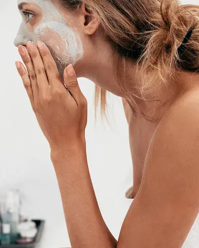
Machiaj lifting pas cu pas


Machiajul lifting se bazează pe combinația dintre lejeritate, efect de ridicare vizuală și estompare fină. Scopul este de a reda prospețimea feței, de a ridica optic trăsăturile și de a crea un efect de întinerire naturală, fără texturi grele.
Fond de ten lejer
Folosește un fond de ten cu acoperire ușoară sau medie și finisaj natural. Acesta trebuie să uniformizeze tenul fără a evidenția textura sau liniile fine.
Corector cu efect de lifting
Aplică corectorul nu doar sub ochi, ci și ușor extins spre tâmple. Acest lucru ajută la ridicarea vizuală a privirii și la un aspect mai fresh.
Contur și blush orientate în sus
Toate liniile trebuie direcționate ascendent: conturul delicat și blush-ul aplicat spre tâmple creează efect de lifting facial.
Machiajul ochilor
Evită formele grele sau căzute. Estomparea în sus, eyeliner-ul lifting și nuanțele deschise oferă un aspect mai tânăr și mai deschis al privirii.
Iluminator
Aplică pe punctele înalte ale feței (pomeți, tâmple) pentru un efect de prospețime și glow natural, fără exces de strălucire.
Buze
Alege nuanțe nude sau delicate cu efect natural de volum. Un contur fin și un aspect hidratat fac buzele să pară mai tinere și îngrijite.
Machiajul lifting ideal este proaspăt, curat și armonios — oferă un efect vizual de întinerire și evidențiază frumusețea naturală a feței.
Top produse pentru machiaj de seară
Machiajul de seară necesită produse rezistente, pigmentate și expresive: fond de ten cu acoperire bună, farduri intense și buze accentuate.
Recenzie independentă. Produsele nu sunt sponsorizate.
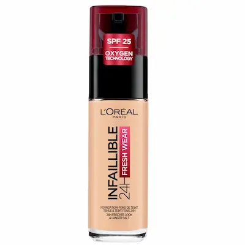
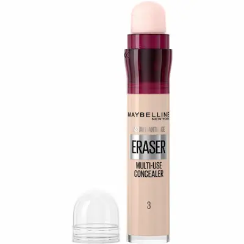
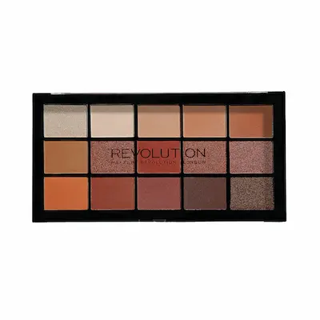
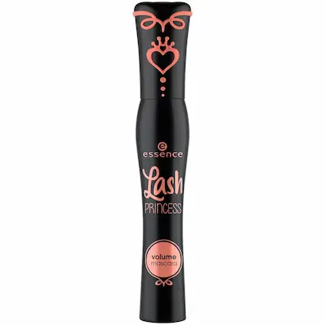
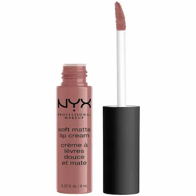
Greșeli frecvente în machiajul lifting
- fond de ten prea dens, care evidențiază ridurile
- linii coborâte (tuș, blush sau contur aplicat în jos)
- exces de texturi mate
- estompare slabă care creează linii dure
- nuanțe prea închise sau grele
Machiajul lifting necesită delicatețe: trebuie să ofere prospețime feței și un efect de ridicare vizuală. Greșelile de textură și direcție pot accentua semnele de îmbătrânire în loc să le corecteze.
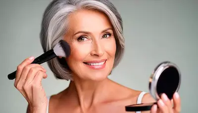
Cum faci machiajul lifting rezistent și cu efect de întinerire
Machiajul lifting trebuie să ofere un aspect proaspăt și să reziste întreaga zi. Scopul principal este un efect de piele netedă și față vizibil „ridicată”, fără a încărca tenul.
1. Bază hidratantă
O piele bine hidratată este baza efectului lifting. Folosește creme ușoare și primer-e luminoase pentru un aspect proaspăt și neted.
2. Fond de ten lejer
Alege un fond de ten cu acoperire ușoară sau medie și finish natural. Texturile prea grele pot evidenția ridurile și încărca tenul.
3. Pudră minimă
Fixează doar zona T sau zonele cu tendință de luciu. Excesul de pudră usucă pielea și poate adăuga vizual vârstă.
4. Direcții corecte
Toate liniile trebuie orientate în sus: blush, contur și farduri. Acest lucru creează efectul de față mai fermă și mai tânără.
5. Fixare ușoară
Folosește spray de fixare cu efect hidratant. Acesta uniformizează machiajul și păstrează un aspect natural și îngrijit.
Machiajul lifting ideal înseamnă lejeritate, prospețime și luminozitate fină: pielea arată mai netedă, iar trăsăturile sunt vizibil mai armonioase și ridicate.
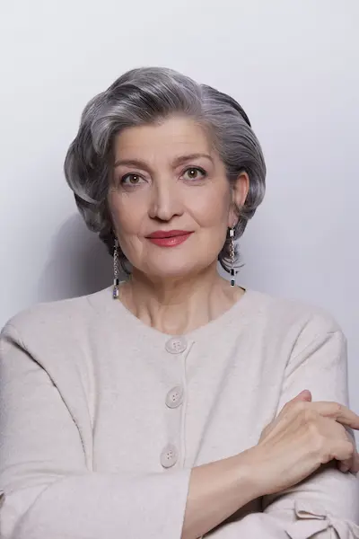
Cui i se potrivește machiajul lifting
Machiajul lifting se potrivește aproape tuturor, mai ales dacă îți dorești un ten mai proaspăt și trăsături vizual „ridicate”. Scopul principal este un efect de piele netedă, luminozitate fină și un aspect odihnit.
- Ten normal: acceptă foarte bine texturile lejere și luminoase — se poate obține un efect lifting natural, fără încărcare.
- Ten uscat: ideal pentru machiajul lifting — este important să folosești produse hidratante și să eviți texturile mate.
- Ten mixt: menține echilibrul — matifiază ușor zona T și păstrează luminozitatea pe pomeți.
- Ten gras: alege texturi ușoare și rezistente și folosește cât mai puțină pudră pentru un aspect proaspăt, fără încărcare.
- Ten matur: machiajul lifting este ideal — netezește optic pielea, ridică trăsăturile și oferă un aspect mai fresh și îngrijit.
Machiajul lifting ideal înseamnă adaptare la tipul de ten și trăsături: oferă prospețime, efect de lifting vizual și un aspect mai ușor, natural și elegant.
Set buget pentru machiaj lifting (până la 350 RON)
💡 Cost total set: ~275–350 RON
Recenzie independentă. Produsele nu sunt sponsorizate.
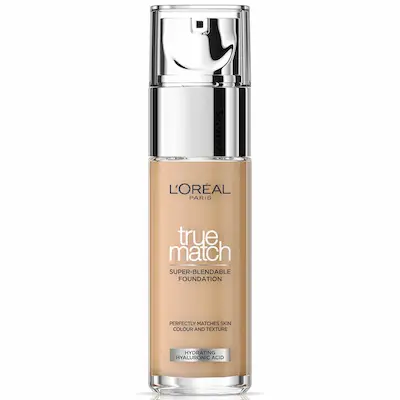
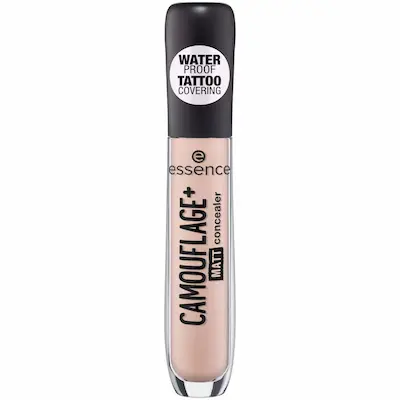
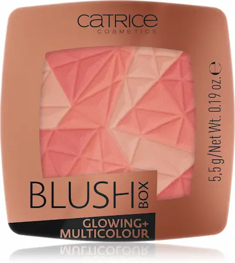
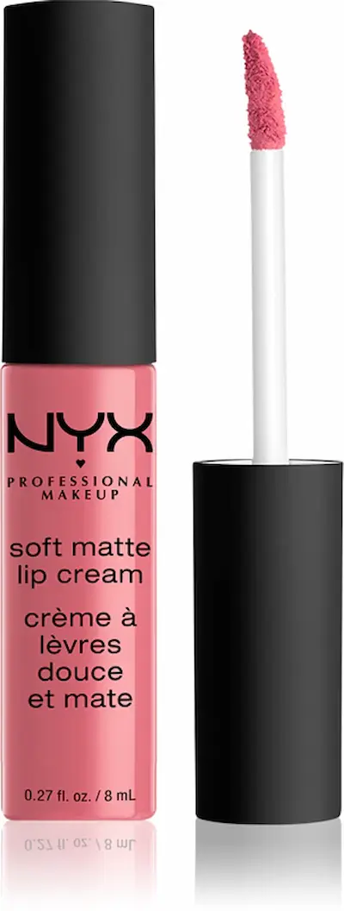
Întrebări frecvente despre machiajul lifting
Ce este machiajul lifting?
Machiajul lifting este o tehnică ce ridică vizual trăsăturile feței, oferă un aspect mai proaspăt și neted al pielii. Se folosesc texturi ușoare, luminozitate naturală și direcții corecte de aplicare.
Cui i se potrivește machiajul lifting?
Este potrivit pentru toată lumea care vrea să arate mai fresh și mai tânără. Este deosebit de eficient pentru tenul matur sau pentru un aspect obosit, când este nevoie de un efect de „ridicare” vizuală a feței.
Machiajul lifting accentuează ridurile?
Nu, dacă este realizat corect. Dimpotrivă, reduce vizibilitatea acestora prin texturi ușoare, hidratare corectă și evitarea produselor mate și grele.
Ce fond de ten este recomandat pentru efect lifting?
Se recomandă fonduri de ten ușoare sau medii, cu finish natural sau ușor luminos. Acestea uniformizează tenul fără să-l încarce sau să accentueze textura pielii.
Pot face machiajul lifting singură?
Da, dar este important să respecți tehnica: direcții ascendente de estompare, cantitate minimă de pudră și accent pe prospețimea pielii. Pentru evenimente importante, este recomandat un makeup artist.
Este potrivit machiajul lifting pentru poze și evenimente?
Da, arată excelent atât în viața reală, cât și în fotografii: tenul pare mai neted, mai luminos și mai îngrijit, fără efect de încărcare.